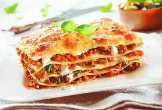

Lasagna

Description
Lasagna is a classic Italian dish that features layers of wide pasta sheets, rich meat sauce,
creamy bechamel sauce, and plenty of melted cheese. It's a beloved comfort food that's
both hearty and delicious. Here's a basic recipe for making lasagna:
Ingredients
For the Meat Sauce
- 1 pound (450g) ground beef or a mixture of ground beef and pork
- 1 onion, finely chopped
- 2 cloves garlic, minced
- 1 can (28 oz) crushed tomatoes
- 1 can (14 oz) tomato sauce
- 1 can (6 oz) tomato paste
- 2 tablespoons olive oil
- 1 teaspoon dried oregano
- 1 teaspoon dried basil
- Salt and pepper to taste
for the Bachamel Sauce
- 4 cups (1 liter) whole milk
- 1/2 cup (60g) all-purpose flour
- 1/2 cup (113g) unsalted butter
- A pinch of nutmeg
- Salt and pepper to taste
Other Ingredients
- 12-16 lasagna noodles, cooked al dente
- 2 cups (200g) shredded mozzarella cheese
- 1 cup (100g) grated Parmesan cheese
Instructions:
1.Prepare the Meat Sauce
- In a large saucepan, heat the olive oil over medium heat.
- Add the chopped onion and garlic and sauté until they become translucent
- Add the ground meat and cook until browned, breaking it apart with a spoon.
- Stir in the crushed tomatoes, tomato sauce, and tomato paste.
- Season with oregano, basil, salt, and pepper.
- Simmer the sauce for about 30 minutes, stirring occasionally.
2.Prepare the Bachamel Sauce
- n a separate saucepan, melt the butter over low heat.
- Add the flour and whisk continuously to create a smooth roux. Cook for a couple of minutes, but do not let it brown.
- Gradually whisk in the milk to create a smooth sauce.
- Add a pinch of nutmeg and season with salt and pepper.
- Continue to cook and whisk until the sauce thickens, about 10-15 minutes.
3.Assemble the Lasagna
- Preheat your oven to 375°F (190°C).
- In a 9x13-inch (23x33 cm) baking dish, start by spreading a small amount of meat sauce on the bottom.
- Layer with cooked lasagna noodles.
- Add a layer of meat sauce, followed by bechamel sauce, and a sprinkling of both mozzarella and Parmesan cheese.
- Repeat the layers until you've used all the ingredients, finishing with a layer of meat sauce and plenty of cheese on top.
4.Bake
- Cover the baking dish with aluminum foil and bake in the preheated oven for about 25-30 minutes.
- Remove the foil and bake for an additional 10-15 minutes, or until the top is golden and bubbly.
5.Serve
- Allow the lasagna to rest for a few minutes before serving. This helps it set and makes it easier to slice.
- Serve your delicious homemade lasagna with a side of garlic bread or a fresh green salad.
here is a quick video how to cook Lasagna